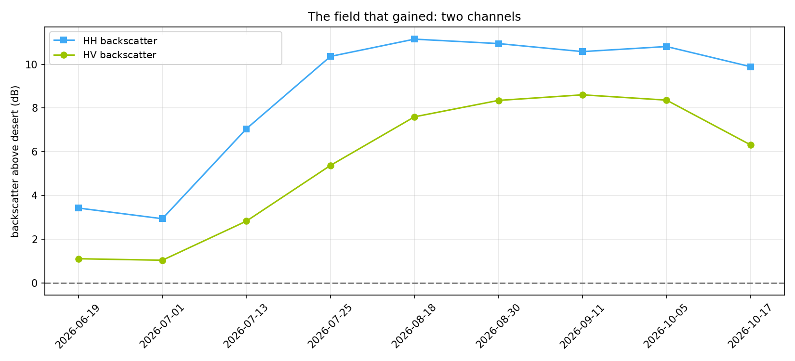
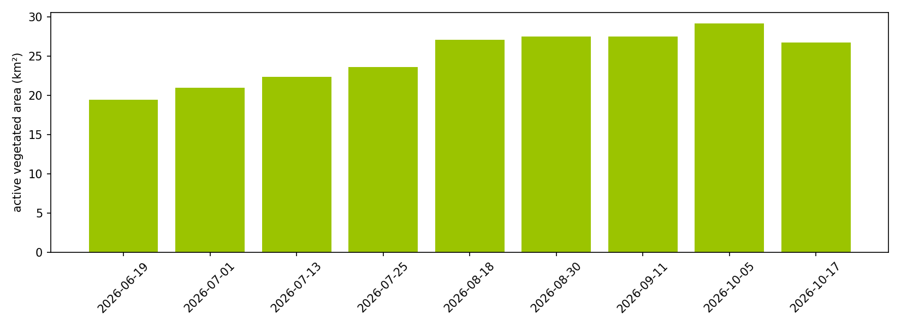
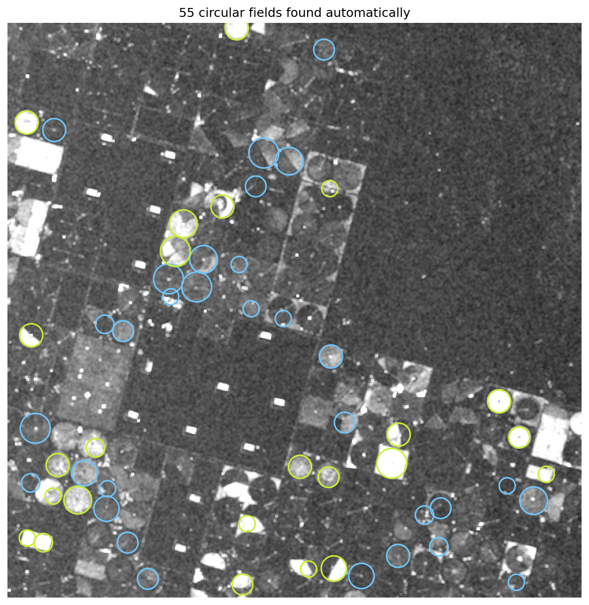
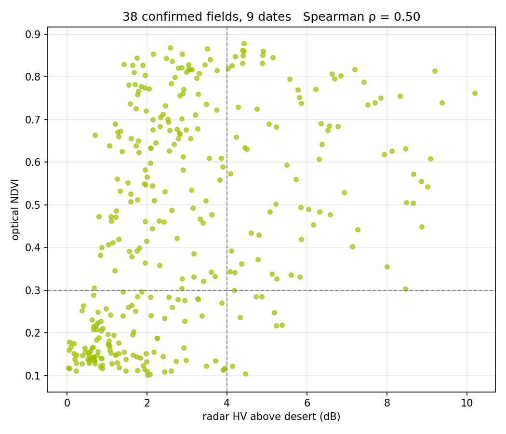

Echofield
Radar from space, watching desert farms switch on and off. Echofield uses NASA-ISRO NISAR radar to show which fields in northern Saudi Arabia grew, which were cut, and when.

The Basaita farms in Al Jouf. Imagery: Google Earth, 2021. This photo shows the area for context only and is not part of the radar analysis.
Research question
Al Jouf is called the breadbasket of Saudi Arabia. Its center-pivot farms draw on groundwater that does not refill, so knowing which fields are active, and when, matters for water and food security. This project asks whether spaceborne radar can show when these farms are active, and whether it can show something that an ordinary satellite photograph cannot.
Study area and data
The study area is a 20 km by 20 km window of center-pivot farms in the Basaita area of Al Jouf, near Tubarjal. The data is NISAR L-band Level 2 GCOV, taken from a single viewing geometry (track 71, frame 17, ascending) so that every date is seen from the same angle. Each pixel covers 20 m, and there are two channels. HV responds mainly to vegetation. HH responds mainly to the ground surface.
Seasonal radar record, June to October 2026
Nine NISAR acquisitions of the same area in the HV channel. Brighter means more vegetation. Move the slider or press play.

Two-date comparison
Drag to compare the first acquisition, June 19, with the last, October 17.

Change detection
The two dates are subtracted in decibels, which is the same as taking the ratio of the two echo powers. To separate real change from noise, the noise was measured over empty desert, where nothing should change, and found to be 0.50 dB. A pixel is counted as changed only if it moved by more than 1.5 dB, three times that amount. The desert stays black in the map, which shows that the method is not inventing change.

A field here is a connected group of changed pixels larger than 12 hectares. This map compares only the first date and the last date. A field that grew and was cut in between ends where it started, so it shows as black even though a lot happened there. For that reason Echofield also follows fields through every date.
Field-level time series
Each point below is the average of every pixel inside one field, measured against the desert on the same date. Averaging a whole field removes most of the speckle noise and gives one reliable value per field per date.

The field that lost vegetation dropped by 5.9 dB between July 25 and August 18, a fast change that is consistent with harvest. The field that gained vegetation was flat until July 1 and then rose steadily to a peak on September 11. Growth is gradual and harvest is abrupt, and the radar record shows both.
What radar adds to a photograph
Skies over Al Jouf are usually clear, so seeing through cloud is not the main advantage here. The advantage is that radar records two signals where a photograph records one, and the two respond to different things.
Radar is most sensitive to two properties of the ground: roughness and the dielectric constant. Water has a very high dielectric constant, so wetting the soil makes it reflect more strongly, and this shows up mainly in HH. Leaves and stems scatter the signal in many directions and change its polarization, which shows up mainly in HV. That is why the two channels can tell irrigation and plant growth apart in time.

On the field that grew, the surface channel (HH) was close to its maximum by July 25. The vegetation channel (HV) did not peak until September 11, about seven weeks later. This is consistent with a field being irrigated and prepared first, with the crop building up afterwards.
Active vegetated area

Counting pixels more than 4 dB above the desert as vegetated, active area in the window grew from 19.4 km² on June 19 to 29.1 km² on October 5. The exact size depends on where that line is drawn, so the result was tested at 3 dB and 5 dB as well. The growth held at all three settings, between about one third and two thirds. Buildings, which are always very bright in the HH channel, were excluded.
Automatic field detection
Instead of choosing fields by hand, Echofield finds the circular fields itself. For every pixel it takes the most vegetated value reached during the season, so every field that was farmed at any point shows up as a bright disc. An edge detector traces the outlines of those discs, and a Hough circle transform searches the outlines for circles between 0.6 and 1.2 km across. A circle is kept only if its inside was vegetated at some point in the season.

The detector proposed 55 candidate circles. Each was checked by eye against fixed rules, rejecting any circle that sat on a rectangular plot, did not sit on a field, overlapped another circle, or was much smaller than its field. 38 passed, about 69% of the candidates. Following the confirmed fields through the season, the number of active fields rose from 4 on June 19 to a peak of 17 on October 5. This agrees with the area result above, measured a different way. Chartreuse circles were active on October 17 and sky blue circles were not.
The detector does not find every field. It misses fields that touch their neighbours and fields with faint or patchy edges, and a few circles overlap or sit inside a larger field. The counts are best read as a trend for the detected fields, not a full census.
Optical validation
To test whether the radar signal follows real vegetation, it was compared with an independent sensor. NASA's Harmonized Landsat and Sentinel-2 (HLS) product gives optical images of the same farms, and from those NDVI was computed, a standard measure of how green a field is. For each radar date the analysis used the clearest optical scene within 6 days. All 9 dates were matched to a cloud-free scene taken 0 to 1 day from the radar pass, and NDVI was sampled at exactly the same pixels as the radar.

On the field that lost vegetation, both sensors peak on July 25 and drop by August 18, with NDVI falling from 0.53 to 0.29. An independent satellite confirms the harvest timing. On the field that gained vegetation, NDVI rose from 0.19 to 0.48 and peaked in late August, then fell to about 0.2, while radar stayed high until October 5. One likely explanation, not yet tested, is that the crop matured and dried. It would then lose its green colour while keeping the structure that radar responds to.

Across the 38 confirmed fields and 9 dates (342 field-date pairs), radar and NDVI have a Spearman correlation of 0.50, a moderate positive relationship. Classified as active or inactive (radar above 4 dB, NDVI above 0.3), the two agree 58% of the time. Most disagreements are fields that look green optically but stay below 4 dB in radar. L-band has a long wavelength and passes through short or young plants, so it sees little vegetation there. The two sensors agree on direction and timing and differ where they measure different things: greenness for NDVI, structure and water for radar. The 4 dB threshold was set from the radar before this check and was not adjusted to match NDVI.
Method
Only the farm window is read from NASA's cloud archive, so each date loads in about 20 seconds without downloading the full 1.8 GB file. Speckle is reduced with a 5 by 5 average and values are converted to decibels. Every date is measured against the same patch of empty desert, which removes small offsets between acquisitions. The analysis is written in Python and runs in Google Colab.
Limitations
Radar shows how much vegetation is present and when it changes, but it cannot identify the crop. NISAR revisits every 12 days and the August 6 pass is missing, so an event can only be dated to a window. The September 23 acquisition has no HV channel and was left out. The HH channel also responds to growing stalks, so it is not a pure water signal. The products are provisional, and L-band is weak at detecting very young, short crops, which is the likely reason for most of the disagreement with NDVI. Some large bright rectangular plots, possibly greenhouses or orchards, are counted as active area; they raise the absolute area but do not change the trend. The main winter wheat season falls outside this June to October window. The study covers one 20 km by 20 km sample of the Basaita farms, not all of Al Jouf.
Next steps
Many of these circular fields are planted and harvested in slices, so the next step is to track sectors inside each circle. After that come a more complete field detector that handles touching fields, and a full year of data.
Because NISAR images nearly all land every 12 days and its data is free, the same method could run across every farming region in Saudi Arabia. Water managers could use it to see which fields draw on groundwater and when, without relying on farmer surveys.